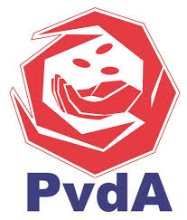

Logo en partijleider PvdA
ICT
PvdA is overtuigd dat de ICT-sector nadelige gevolgen kan hebben.
Het gaat vooral om het enorm toenemende energiegebruik, dit kan gevolgen hebben met het milieu.
Ook vind de PvdA dat iedereen moet leren omgaan met internet,
voor verbetering van dienstverlening en communicatie
Omdat veel mensen internet gebruiken vind de PvdA dat er afspraken met providers gemaakt moet worden. Om te voorkomen dat internet een vrijplaats wordt.